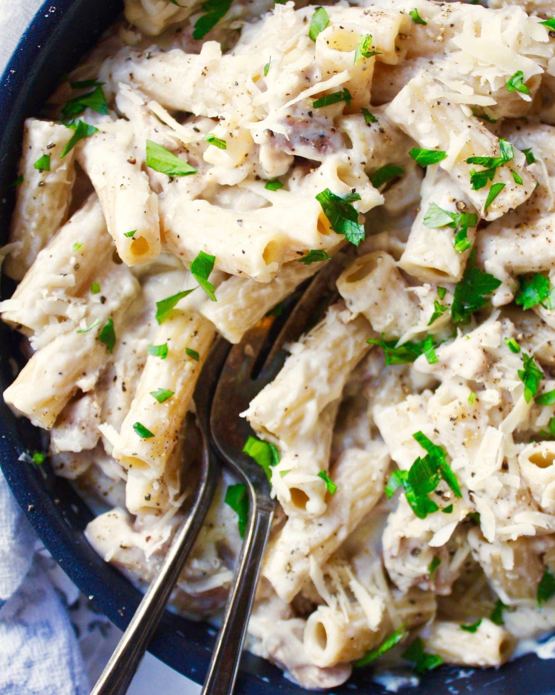

Chicken Alfredo
Ingredients For the Chicken:
- 2 boneless, skinless chicken breasts
- Salt and pepper to taste
- 1 tablespoon olive oil
- 1 tablespoon butter
- 1 teaspoon Italian seasoning (optional)
Ingredients For Alfredo Sauce:
- 1/2 cup unsalted butter
- 2 cups heavy cream (or half-and-half for a lighter version)
- 2 cups freshly grated Parmesan cheese
- Salt and pepper to taste
- Pinch of nutmeg (optional)
- 1 pound (450g) fettuccine pasta
- Chopped parsley for garnish (optional)
Instructions:
- Start by preparing the chicken. Season the chicken breasts with salt, pepper, and Italian seasoning (if using) on both sides.
- Heat olive oil and butter in a skillet over medium-high heat. Add the seasoned chicken breasts and cook for about 6-7 minutes per side or until they are fully cooked through and nicely browned. Remove the chicken from the skillet and let it rest for a few minutes. Slice the chicken into strips or bite-sized pieces.
- Meanwhile, bring a large pot of salted water to a boil. Cook the fettuccine pasta according to the package instructions until al dente. Drain the pasta, reserving about 1 cup of pasta cooking water.
- For the Alfredo sauce, melt the butter in a saucepan over medium heat. Once melted, add the heavy cream and bring it to a simmer. Reduce the heat to low.
- Gradually whisk in the grated Parmesan cheese into the cream mixture, stirring continuously until the cheese is melted and the sauce is smooth and creamy. Season the sauce with salt, pepper, and a pinch of nutmeg (if using). If the sauce is too thick, you can add some of the reserved pasta water to adjust the consistency.
- Add the cooked fettuccine pasta to the Alfredo sauce and toss until the pasta is coated evenly.
- To serve, plate the pasta and top it with the sliced or diced cooked chicken. Garnish with chopped parsley if desired.